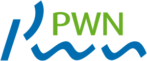
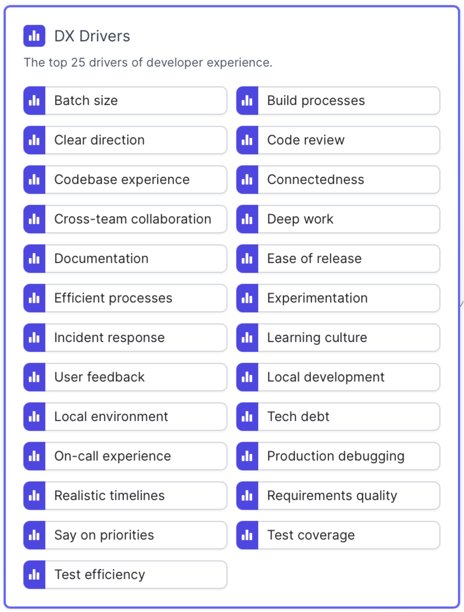
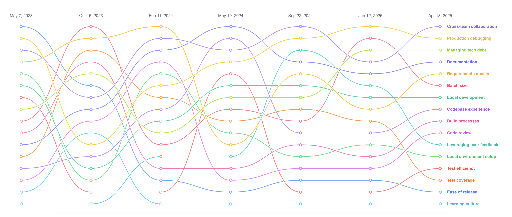
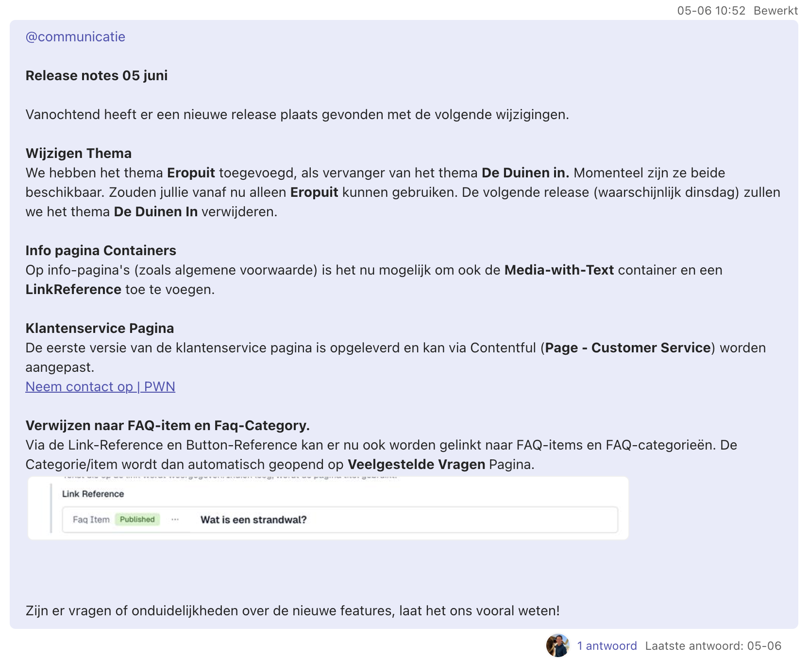
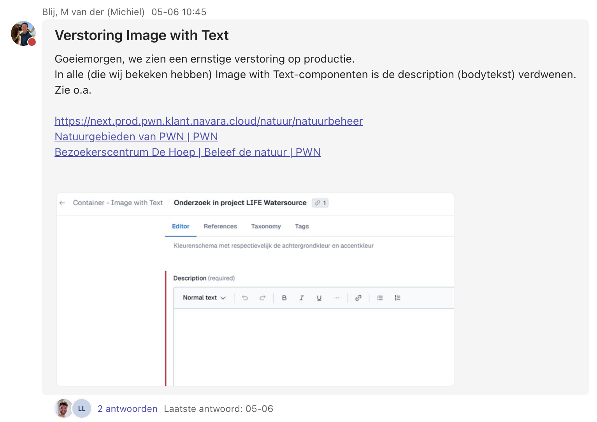

Onze leerlessen over hoe wij software ontwikkelen, en waarom werken leuk moet zijn.
NAVARA, team online. Nieuw design van de website voor PWN.
Werken moet leuk zijn.
En dat begint bij hoe je je werk organiseert.
Developers voegen de meeste waarde toe met:
Developer Experience
Developer experience gaat over hoe ontwikkelteams hun werk ervaren. Het houdt rekening met alle facetten van het werk van een ontwikkelteam, zoals de kwaliteit van requirements, tools en technologische keuzes, best practices en workflows, maar ook de omgeving waarin het ontwikkelteam opereert, de cultuur en de mindset van de organisatie. DevEx is van toepassing op iedereen die betrokken is bij de ontwikkeling van software. Uiteraard de developers, maar ook Ops-engineers, testers, UX-designers, scrum masters en product owners.


We hebben geleerd van:
Dat waren geen losse incidenten, maar signalen dat onze werkwijze beter moest.
Betrouwbare pipelines bepalen werkplezier.
Onbetrouwbare pipelines maken development frustrerend. Als pipelines niet betrouwbaar zijn, verlies je vertrouwen in je proces.
Contentful handmatig beheren was foutgevoelig. Contenttypes handmatig aanmaken en bijhouden kost tijd en vergroot de kans op fouten.
Handmatig bijhouden
Foutgevoelig, tijdrovend, niet reproduceerbaar
Contenttypes syncen met OpenTofu
Herhaalbaar, controleerbaar, één druk op de knop


Automatiseren is niet automatisch veilig. Door de OpenTofu-sync verdween er content.
Automatisering moet werk makkelijker maken, niet risico's onzichtbaar maken.
AI versnelt, maar mensen blijven verantwoordelijk.
Automatisering werkt alleen met vertrouwen.
Werk leuker maken is niet alleen techniek. Het vraagt:
"Wat kun jij morgen meenemen?"
Mensen maken fouten, ga daar vanuit. Automatiseer QA zo veel mogelijk. Vooral met AI. Catch issues voordat ze productie halen.
Bij repetitief werk stellen we steeds dezelfde vraag: moet een mens dit doen, of kunnen we dit automatiseren? Maar denk vooraf na over de begrenzing.
Meerdere reviewers verhogen kwaliteit én verdelen kennis. Zorg dat meerdere mensen elk onderdeel kennen.
Het voelt traag, maar het is de snelste weg. Contentful: handmatig was foutgevoelig en kostte continu tijd. Nu is het één druk op de knop.
Vragen, reacties, ervaringen?
"Welke van deze vier lessen raakt het meest aan iets wat jij herkent in jouw team?"